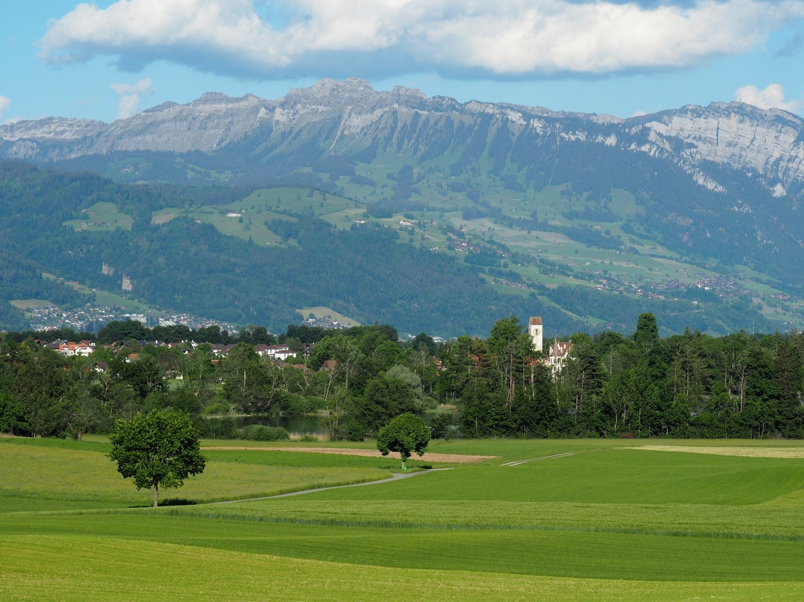
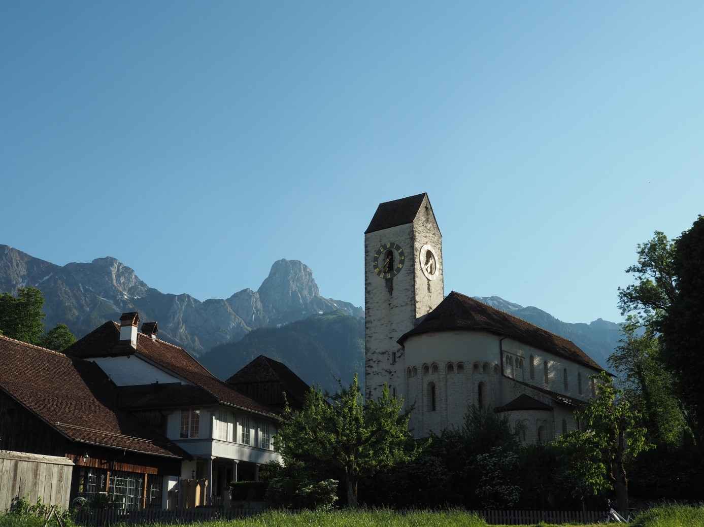
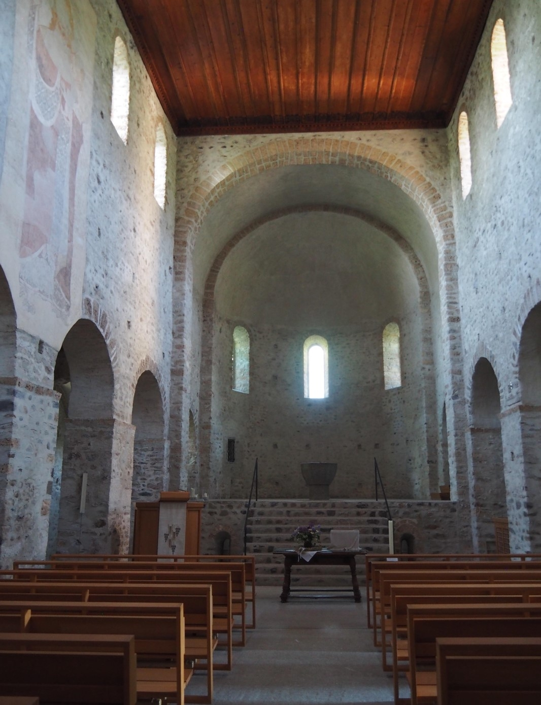

Die Kirche Amsoldingen schmiegt sich in eine durch Hügel und Seen geprägte Landschaft vor beeindruckender Bergkulisse und bildet mit den dazu gehörenden Gebäuden – Pfrundscheune, Pfarrhaus, Turmhaus und Schloss – eine Sehenswürdigkeit des Berner Oberlands mit bemerkenswerter Geschichte. Die heutige Pfarrkirche vierer Dörfer ist nicht nur eines der bedeutendsten Bauwerke des Kantons Bern, sondern auch europaweit eine der besterhaltenen Kirchen der frühromanischen Epoche.
Die Kirche von Amsoldingen. (Bild: Nicole Hublard)
Von der ehemaligen Kultstätte…
Die Kirche Amsoldingen gehört zu einer Reihe frühromanischer Gotteshäuser rund um den Thunersee, die im Kulturkontext des Hochburgunds entstanden sind; darunter die Kirche Scherzligen oder die Schlosskirche Spiez. Gemäss unterschiedlichen Chronikhinweisen soll der Bau dieser insgesamt zwölf Kirchen im 10. Jahrhundert durch Berta von Alamannien (Anfang 900–957/61) oder Rudolf II. von Hochburgund (um 880/85–937) veranlasst worden sein. Die ursprüngliche Form der Kirche Amsoldingen – errichtet auf einem aus dem späten 7. oder frühen 8. Jahrhundert stammenden Vorgängerbau – bestand aus einer dreischiffigen, querschifflosen Pfeilerbasilika mit drei Apsiden und einem hochgelegenen Chor. Wahrscheinlich waren das weltliche Chorherrenstift und die dazugehörige Stiftsschule bereits zu Beginn an diese Kirche angeschlossen. Nach einer Blütezeit im 14. Jahrhundert wurde dieses Chorherrenstift 1484, nach mehr als einem halben Jahrtausend Bestand aufgrund der Erbauung des Berner Münsters mit dazugehörigem Chorherrenstift, aufgelöst. Der "untote" Chorherr, der am Leichnam des letzten Priors, Burcadus Stör (1467-1485), Grabschändung begangen haben soll, soll gemäss einer Sage noch heute als "Störengrebel" mit einer Schaufel auf der Schulter herumgeistern müssen. Das ehemalige Propsteigebäude wurde schlussendlich im 19. Jahrhundert in ein Schloss umgebaut, in dem diverse Patrizierfamilien wohnten und das sich auch noch heute in Privatbesitz befindet. Im Jahre 1501 wurde im Zuge der Reformation aus der Stiftskirche Amsoldingen – dem Thuner Stadtheiligen und Schutzpatron des Königreichs Burgund Mauritius gewidmet – eine Pfarrkirche, in der unter anderem Johannes Haller (1487–1531), ein Mitstreiter Huldrych Zwinglis (1484–1531), während fünf Jahren als Pfarrer diente, und der wegen seiner Heirat das Dorf im Jahre 1525 wieder verlassen musste. Ein weiterer bekannter Pfarrer Amsoldingens war Samuel Lutz (1674–1750), der den Ort zu einem wichtigen Standort der pietistischen Bewegung werden liess. In bauhistorischer Hinsicht weist die Kirche Amsoldingen eine äussert bewegte und interessante Vergangenheit auf, geprägt durch zahlreiche Erneuerungen und Umbauten, angefangen von der Zerstörung des Chorherrenstifts durch die Zähringer gegen Ende des 12. Jahrhunderts über den Brand von 1576 bis hin zum Entfernen der römischen Säulen aus der Krypta im Jahre 1876. Die angesichts des schlechten Erhaltungszustands zweifelsohne notwendige weitumfassende Gesamterneuerung zwischen 1978 und 1980 stellte den ursprünglichen Zustand der Kirche weitgehend wieder her. Die anfängliche Form der dreischiffigen romanischen Basilika wurde durch den Bau des mächtigen Turmes verändert, der zwischen 1354 und 1513 an der Stelle der südlichen Apsis errichtetet wurde, wodurch sich die klare Ordnung mit den beiden Seitenschiffen und dem höheren Mittelschiff nun nicht mehr so offensichtlich im Äussern widerspiegelt. Das nördliche Seitenschiff hingegen entspricht grösstenteils der ursprünglichen Gestalt mit Kegeldach und Seitenapsis, die notabene zeitweise als Sakristei, Archiv und Gefängnis benutzt wurde.
Die Kirche Amsoldingen in idyllischer Lage vor dem Stockhorn. (Bild: Nicole Hublard)
…bis zur heutigen Pfarrkirche
Das Innere der Kirche wird durch eine schlichte und harmonische Bauweise dominiert. Die schöne Holzdecke stammt aus der Zeit nach dem Kirchenbrand, wobei die Ornamente 1908 hinzugefügt wurden. Die dreischiffige Säulenkrypta – eine Zeitlang sogar Käselager und Pfarrkeller – befindet sich unter einem erhöhten Teil des Mittelschiffes und wurde im Rahmen der Gesamtrestauration vor vierzig Jahren in den Zustand um 1210 wiederhergestellt. Während diesen Restaurationsarbeiten stellte sich zudem heraus, dass die Kirche im frühen 14. Jahrhundert reich bemalt gewesen war, wovon heute nur noch die Abbildung des Heiligen Christopherus zeugt. Darüber hinaus besitzt die Kirche von Amsoldingen einen bemerkenswerten frühgotischen Taufstein: er wurde im ersten Drittel des 14. Jahrhunderts aus Sandstein gehauen und zeugt von der Blütezeit des Stifts unter der Herrschaft der Kyburger. Sein Sockel und auch das Becken sind von achteckiger Form; auf den Flachreliefs befinden sich Akanthusblätter, Heckenrosen und Tiermedaillons, die vom ausgeprägten Symboldenken des Mittelalters zeugen. Die Orgel von Johann Jakob Weber (1756–1832) stammt aus dem Jahre 1812 und ist in ihrem Originalzustand eine der ältesten Berner Landorgeln. Des Weiteren sind auch der Abendmahltisch von 1668 und die drei farbigen Chorfenster zum Thema „werden“ von Max Brunner aus dem Jahre 1985 zu beachten, welche die Dreieinigkeit symbolisieren.
Innenansicht der Kirche Amsoldingen in Richtung Taufstein. (Bild: Nicole Hublard)
Letztendlich stellt die Kirche Amsoldingen aufgrund ihrer beispiellosen Geschichte ein äusserst faszinierendes und bedeutsames Bauwerk dar, das von verschiedenen religiösen Traditionen zeugt: wahrscheinlich wurde sie auf einer ehemals keltischen Kultstätte hoher Wichtigkeit errichtet, die dem Bau einer ersten, kleineren Kirche weichen musste; die Säulen der Krypta sind römischen Ursprungs; und die heutige Pfarrkirche diente einst als Chorherrenstift. Die direkte Lage am Jakobsweg nach Santiago de Compostela versinnbildlicht dabei ihre hohe theologisch-historische Bedeutung.
Pilgerstempel der Kirche Amsoldingen (Bild: Nicole Hublard)
Nicole Hublard ist Studentin der französischen und spanischen Sprach- und Literaturwissenschaften an der Universität Bern.
Weitere Artikel von {{ author.author }} finden Sie hier:
Zur Vertiefung:
- Kramer, Daniel: «Der Thuner Medaillon-Teppich und die Wollstickerei der Wartburg (14. Jh.)», in: Jahresbericht Schlossmuseum Thun, Thun 2003, 27-50, verfügbar unter: https://biblio.unibe.ch/digibern/jahrbuch_schloss_thun/jahrbuch_schloss_thun_2003.pdf (10.06.2020).
- Rutishauser, Samuel: Kirche Amsoldingen: Schweizerischer Kunstführer (Serie 30, Nr. 296), hg. in Zusammenarbeit mit der Kirchgemeinde Amsoldingen, Gesellschaft für Schweizerische Kunstgeschichte, Bern 1981.
- Rutishauser, Samuel: Amsoldingen: Ehemalige Stiftskirche, Bauforschung, Bern 1982.